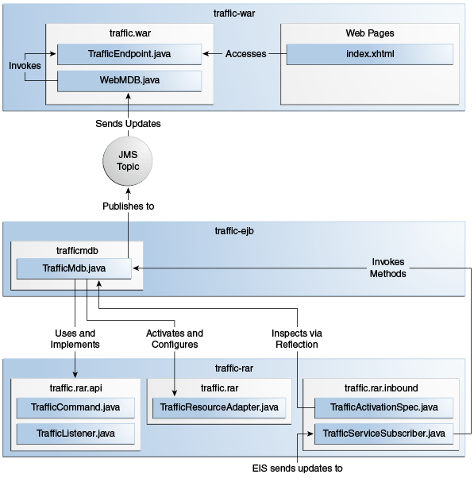

{"report":[
{"city":"City1", "access":"AccessA", "status":"GOOD"},
{"city":"City1", "access":"AccessB", "status":"CONGESTED"},
...
{"city":"City5", "access":"AccessE", "status":"SLOW"}
]}The traffic Example
The traffic example demonstrates how to implement and use a simple
inbound resource adapter that receives data from a legacy EIS using a
TCP socket.
The example is in the tut-install`/examples/connectors/traffic` directory. See Chapter 2, "Using the Tutorial Examples," for basic information on building and running sample applications.
The example demonstrates the scenario in Figure 54-3 and consists of the following modules:
-
traffic-eis: A Java SE program that simulates an EIS -
traffic-rar: The inbound resource adapter implementation -
traffic-ejb: A message-driven bean that is the endpoint for incoming messages -
traffic-war: A web application that displays information from the message-driven bean -
traffic-ear: An enterprise archive that contains the resource adapter, the message-driven bean, and the web application
Figure 54-3 The traffic Example

The traffic-eis module is an auxiliary project that resembles a legacy
traffic information system. It contains a Java SE program that sends
traffic status updates for several cities to any subscribed client. The
program sends the updates in JSON format over a TCP socket. For example,
a traffic update looks like this:
The traffic-rar module implements the inbound contract of the Java EE
Connector Architecture. This module subscribes to the traffic
information system using the TCP port indicated by the configuration
provided by the MDB and invokes the methods of the MDB to process
traffic information updates.
The traffic-ejb module contains a message-driven bean that activates
the resource adapter with a configuration parameter (the TCP port to
subscribe to the traffic information system). The MDB contains a method
to process the traffic information updates. This method filters the
updates for a particular city and publishes the results to a Java
Message Service (JMS) topic.
The traffic-war module contains a message-driven bean that receives
filtered traffic information updates from the JMS topic asynchronously
and sends them to the clients using a WebSocket endpoint.
Using the Inbound Resource Adapter
In most cases, Java EE application developers use inbound resource adapters developed by a third party. To use an inbound resource adapter, a Java EE application includes a message-driven bean with the following characteristics.
-
The MDB implements the business interface defined by the resource adapter.
-
The MDB specifies configuration parameters to activate the resource adapter.
The business interface defined by the resource adapter is not specified in the Java EE Connector Architecture; it is specific to the EIS.
The MDB in this example is defined as follows:
@MessageDriven(
activationConfig = {
@ActivationConfigProperty(propertyName = "port",
propertyValue = "4008")
}
)
public class TrafficMdb implements TrafficListener { ... }The TrafficListener interface is defined in the API package of the
resource adapter. The resource adapter requires the MDB to provide the
port property.
When the MDB is deployed, it activates the traffic-rar resource
adapter, which invokes the methods of the MDB to process traffic
information updates. Then the MDB filters the updates for a particular
city and publishes the results to a JMS topic.
In this particular example, the TrafficListener interface is empty. In
addition to this interface, the resource adapter provides the
TrafficCommand annotation and uses reflection to discover which
methods in the MDB are decorated with this annotation:
@MessageDriven(...)
public class TrafficMdb implements TrafficListener {
@TrafficCommand(name="report", info="Process report")
public void processReport(String jsonReport) { ... }
...
}This approach enables you to adapt the MDB to support new features in
the EIS without having to modify the TrafficListener interface or the
resource adapter module.
Implementing the Inbound Resource Adapter
The traffic-rar module implements the inbound resource adapter
contract from the Java EE Connector Architecture for the simple traffic
information system (EIS) used in this example. The architecture of the
inbound resource adapter is shown in Figure 54-4.
Figure 54-4 Architecture of the traffic Example

The traffic-rar module implements the interfaces listed in
Table 54-3.
Table 54-3 Interfaces Implemented in the traffic-rar Module
| Package | Interface | Description |
|---|---|---|
|
|
Defines the lifecycle methods of the resource adapter. |
|
|
Defines the configuration parameters that the MDB provides to activate the inbound resource adapter. |
|
|
The traffic service subscriber implements this interface from the work management contract to wait for traffic updates on a separate thread. |
When an MDB activates the inbound resource adapter, the container
invokes the endpointActivation method in the TrafficResourceAdapter
class:
@Connector(...)
public class TrafficResourceAdapter implements ResourceAdapter, Serializable {
...
@Override
public void endpointActivation(MessageEndpointFactory endpointFactory,
ActivationSpec spec)
throws ResourceException {
Class endpointClass = endpointFactory.getEndpointClass();
/* this method is called from a new thread in the example:
MessageEndpoint endpoint = endpointFactory.createEndpoint(null); */
}
}The getEndpointClass method returns the Class type of the MDB
performing the activation, which enables the resource adapter to use
reflection to find methods annotated with @TrafficCommand in the MDB.
The createEndpoint method returns an instance of the MDB. The resource
adapter uses this instance to invoke the methods of the MDB when it
receives requests from the EIS.
After obtaining the message endpoint instance (MDB), the resource
adapter uses the work management contract to create the traffic service
subscriber thread that receives traffic updates from the EIS. The
resource adapter obtains the WorkManager instance from the bootstrap
context as follows:
WorkManager workManager;
...
@Override
public void start(BootstrapContext ctx) ... {
workManager = ctx.getWorkManager();
}The resource adapter schedules the traffic service subscriber thread using the work manager:
tSubscriber = new TrafficServiceSubscriber(tSpec, endpoint);
workManager.scheduleWork(tSubscriber);The TrafficServiceSubscriber class implements the
javax.resource.spi.Work interface from the work management contract.
The traffic service subscriber thread uses reflection to invoke the methods in the MDB:
private String callMdb(MessageEndpoint mdb, Method command,
String... params) ... {
String resp;
/* this code contains proper exception handling in the sources */
mdb.beforeDelivery(command);
Object ret = command.invoke(mdb, (Object[]) params);
resp = (String) ret;
mdb.afterDelivery();
return resp;
}
For more details, see the code and the comments in the traffic-rar module.Running the traffic Example
You can use either NetBeans IDE or Maven to build, package, deploy, and
run the traffic example.
The following topics are addressed here:
To Run the traffic Example Using NetBeans IDE
-
Make sure that GlassFish Server has been started (see Starting and Stopping GlassFish Server).
-
From the File menu, choose Open Project.
-
In the Open Project dialog box, navigate to:
tut-install/examples/connectors -
Select the
trafficfolder. -
Click Open Project.
-
In the Projects tab, expand the
trafficnode. -
Right-click the
traffic-eismodule and select Open Project. -
Right-click the
traffic-eisproject and select Run.The messages from the EIS appear on the Output tab:
Traffic EIS accepting connections on port 4008 -
In the Projects tab, right-click the
trafficproject and select Clean and Build.This command builds and packages the resource adapter, the MDB, and the web application into an EAR archive and deploys it. The server log shows the call sequence that activates the resource adapter and the filtered traffic updates for City1.
-
Open the following URL in a web browser:
http://localhost:8080/traffic/The web interface shows filtered traffic updates for City1 every few seconds.
-
After undeploying the
traffic-earapplication, close thetraffic-eisapplication from the status bar.
To Run the traffic Example Using Maven
-
Make sure that GlassFish Server has been started (see Starting and Stopping GlassFish Server).
-
In a terminal window, go to:
tut-install/examples/connectors/traffic/traffic-eis/ -
Enter the following command in the terminal window:
mvn installThis command builds and packages the traffic EIS.
-
Enter the following command in the terminal window:
mvn exec:javaThe messages from the EIS appear in the terminal window:
Traffic EIS accepting connections on port 4008Leave this terminal window open.
-
Open a new terminal window and go to:
tut-install/examples/connectors/traffic/ -
Enter the following command:
mvn installThis command builds and packages the resource adapter, the MDB, and the web application into an EAR archive and deploys it. The server log shows the call sequence that activates the resource adapter and the filtered traffic updates for City1.
-
Open the following URL in a web browser:
http://localhost:8080/traffic/The web interface shows the filtered traffic updates for City1 every few seconds.
-
After undeploying the
traffic-earapplication, press Ctrl+C in the first terminal window to close thetraffic-eisapplication.